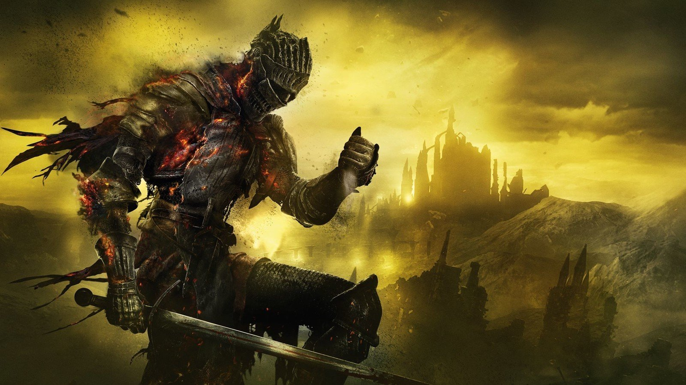
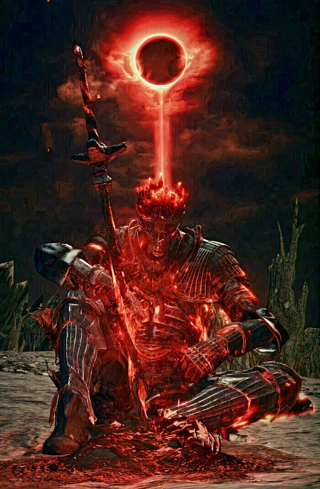

Conheça Dark Souls 3!


Gênero: Aventura e Rpg de ação
Plataformas: PC, PS4/5, Xbox One/Series X|S
Como funciona:

Dark Souls III é um dos jogos mais marcantes da série Souls, desenvolvido pela FromSoftware e lançado originalmente em 2016. Mesmo anos depois, ele continua sendo reverenciado por fãs de jogos desafiadores e atmosféricos, e em 2025 ainda é amplamente jogado e discutido por sua profundidade, dificuldade e beleza sombria.
A história de Dark Souls III se passa no mundo decadente de Lothric, onde o ciclo de luz e escuridão está em colapso. Você assume o papel do Unkindled, um ser que falhou em se tornar um Lorde das Cinzas, mas que agora é convocado para impedir que o mundo mergulhe na escuridão eterna. A missão é reunir os Lordes das Cinzas, antigos heróis que abandonaram seus tronos, e restaurar o fogo que sustenta o mundo. A narrativa é fragmentada e contada principalmente por meio de descrições de itens, diálogos enigmáticos e ambientação, o que exige atenção e interpretação por parte do jogador.
A jogabilidade é conhecida por sua dificuldade elevada, exigindo precisão, paciência e estratégia. O combate é baseado em resistência, esquiva e leitura dos padrões de ataque dos inimigos. Cada arma tem seu próprio estilo, peso e ritmo, e o jogador pode escolher entre espadas, lanças, magias, arcos e até técnicas de piromancia. Os chefes são um dos grandes destaques do jogo: criaturas gigantescas, deformadas e muitas vezes trágicas, que representam os temas centrais do jogo — decadência, sacrifício e renascimento. Enfrentar esses chefes é uma experiência intensa, muitas vezes frustrante, mas extremamente gratificante.
A ambientação de Dark Souls III é sombria, melancólica e cheia de simbolismo. Castelos em ruínas, cemitérios abandonados, cidades consumidas por cinzas e templos esquecidos compõem um mundo que parece estar à beira do fim. A trilha sonora é minimalista, mas poderosa, com músicas que surgem nos momentos certos para intensificar a emoção dos combates e da exploração.
Além da campanha principal, o jogo oferece modos multiplayer cooperativo e competitivo. Você pode invadir o mundo de outros jogadores para duelar ou ajudá-los a derrotar chefes. Essa mecânica de interação entre mundos é uma das marcas registradas da série Souls e adiciona uma camada extra de imprevisibilidade e desafio.
Dark Souls III também recebeu duas expansões: Ashes of Ariandel e The Ringed City, que aprofundam ainda mais a mitologia do jogo e oferecem novos cenários, inimigos e chefes memoráveis. Essas DLCs são consideradas essenciais para quem deseja entender completamente o universo do jogo.
Em resumo, Dark Souls III é uma obra-prima do gênero de ação e RPG, oferecendo uma experiência profunda, desafiadora e artisticamente rica. É um jogo que testa os limites do jogador, mas recompensa com uma sensação única de conquista e descoberta. Mesmo em 2025, ele permanece como um dos títulos mais respeitados e influentes da história dos videogames.
A jogabilidade de Dark Souls III
Dark Souls III apresenta uma estrutura de combate meticulosamente elaborada, exigindo do jogador precisão, paciência e domínio das mecânicas de esquiva e resistência.
- A progressão do personagem está intimamente ligada à capacidade do jogador de compreender padrões de ataque e adaptar sua estratégia conforme o desafio.
- A ambientação sombria e o design de níveis interconectados contribuem para uma experiência de exploração tensa e recompensadora.
- O sistema de risco e recompensa é central à jogabilidade, onde cada ação ofensiva ou defensiva deve ser cuidadosamente calculada.
Conheça outros jogos!